Префектура Тояма · Тояма, Уодзу, Хими, Такаока · еда
Суши Тоямы: четыре ресторана у залива, где рыбу выдерживают в комбу
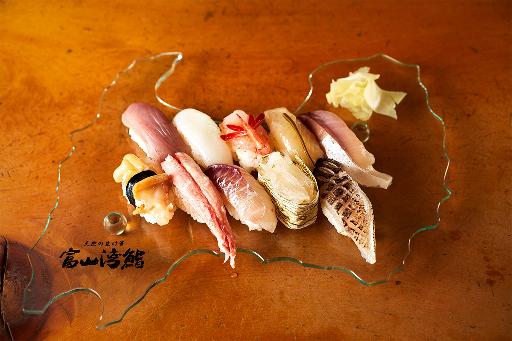
Залив Тояма называют природным садком: из примерно 800 видов рыб и морепродуктов, которые водятся у берегов Японии, здесь живёт около 500. Поэтому в суши-ресторанах префектуры едят прежде всего местную рыбу, а комбу, который в Тояме не растёт, помогает раскрыть её вкус.
Залив
Почему суши в Тояме вкуснее
Рыба в заливе Тояма ловится прежде всего ставными неводами, а сами неводы стоят недалеко от портов. Улов попадает на рынок через считаные часы, и прилавки заполнены рыбой, которую здесь называют словом «китокито», то есть живой, только что из моря. Почти все суши-рестораны префектуры пользуются этим и закупают рыбу каждый день.
Вторая местная черта связана с комбу: рыбу выдерживают в водорослях с Хоккайдо. Такая обработка называется кобу-дзимэ: ломтик рыбы прокладывают листами комбу, и мякоть становится плотнее и слаще. В каждом из четырёх ресторанов ниже кобу-дзимэ делают по-своему.
С 1969 года
«Эдомаэ Суши Маса»: семейная стойка в центре Тоямы
Будущий хозяин пошёл в ученики к суши-мастеру в Токио сразу после девятого класса. Учитель позволил ему открыть собственный ресторан под тем же именем, и в 1969 году «Эдомаэ Суши Маса» появился в торговом квартале города Тояма. Слово «эдомаэ» в названии означает токийский стиль суши, и хозяин сохранил его, хотя кухня с тех пор изменилась.
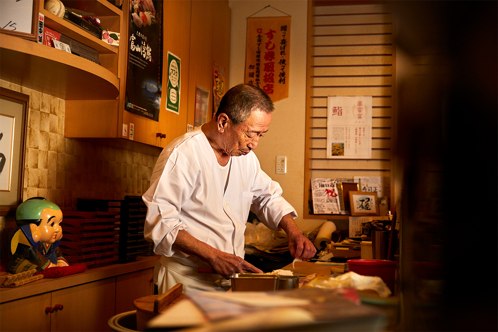
«Сначала я готовил ровно так, как меня научили в Токио. Потом понемногу подстраивался под вкусы здешних гостей и под рыбу, которую ловят в заливе Тояма»
основатель ресторана
Рыба приходит из порта Хими. Сын, второй мастер ресторана, каждый день ездит на рынок и выбирает сезонный улов. В витрине у стойки обычно лежит около 25 видов рыбы и морепродуктов, а кроме нигири в меню есть и отдельные блюда. Секрет местной рыбы основатель объясняет так: талая снежная вода с гор Татэяма приносит в море много минеральных веществ, в заливе хорошо растёт планктон, и рыба получается сладкой.
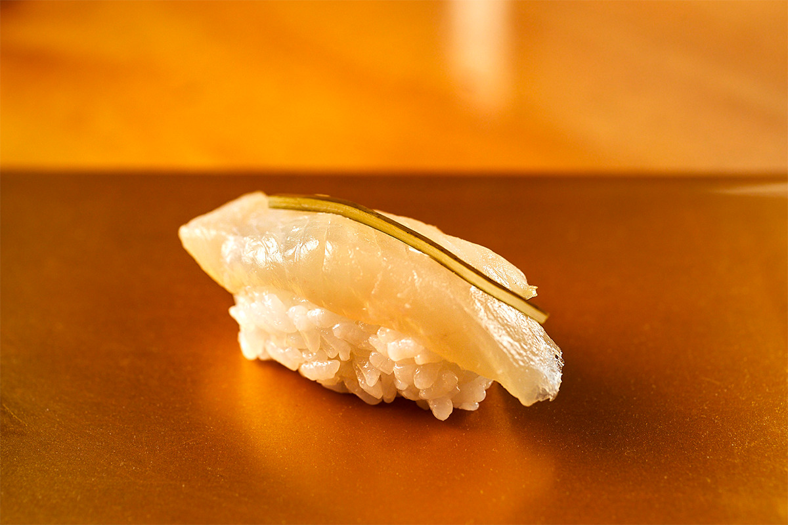
Самое популярное здесь «Тоямаван суши», что значит «суши залива Тояма». Это десять нигири из местной рыбы и суп, характерный для Тоямы. Набор придумали в 2011 году в объединении суши-ресторанов префектуры, чтобы угощать гостей из других мест хорошими местными суши. Говорят, «Тоямаван суши» подают около 50 ресторанов префектуры.
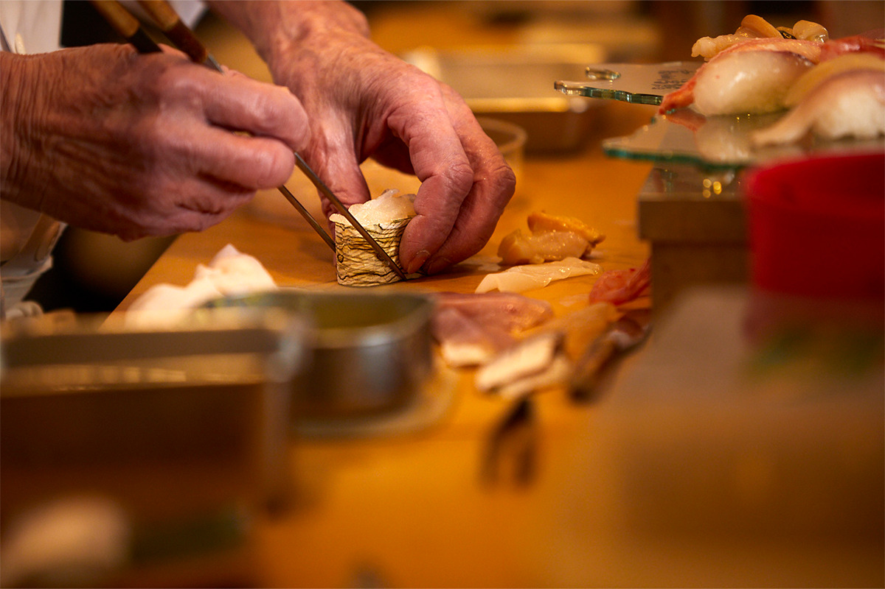
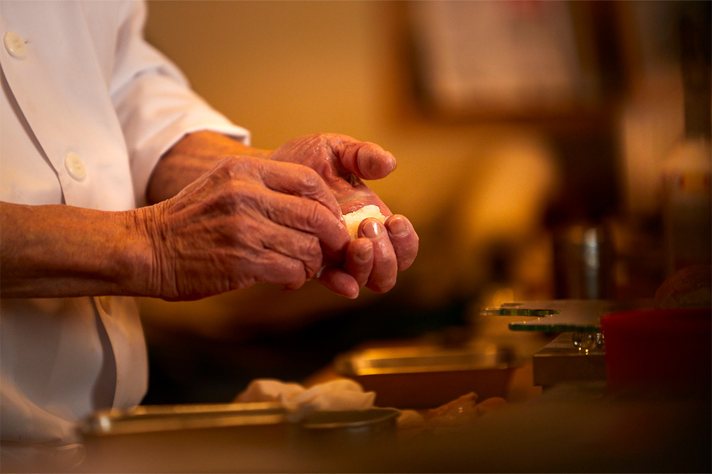
Для риса здесь выбрали сорт «Фуфуфу», выведенный в префектуре Тояма. Основатель доволен им: рис не слишком клейкий и рассыпается во рту. Рыбу он обрабатывает по-разному, смотря по виду, состоянию и вкусу гостя. Одну подаёт как есть, чтобы чувствовалась свежесть, другую выдерживает в комбу, третью оставляет полежать день или два.
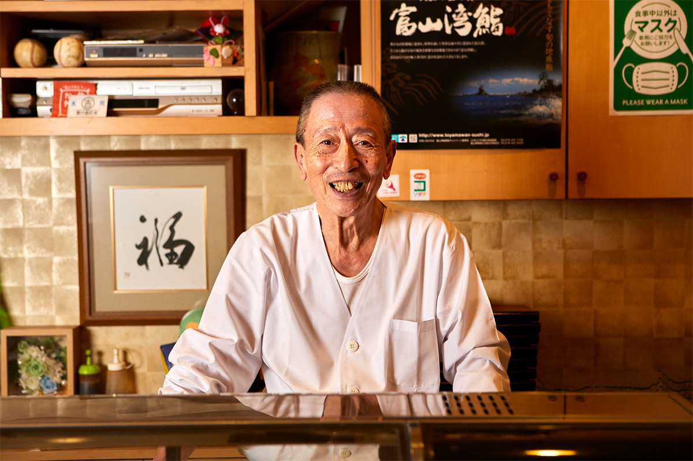
Больше полувека основатель стоит за стойкой. Сыну он шутливо говорит: «Если упаду прямо здесь, ты уж прости». Но уходить на покой не собирается: сюда ходят гости, которые помнят открытие, и гости из других префектур, которые приезжают каждый месяц.
«Разговор через стойку очень важен. Так узнаёшь, что любит гость, и можешь рассказать ему о Тояме. Эту культуру суши-ресторана я хочу сохранить»
основатель ресторана
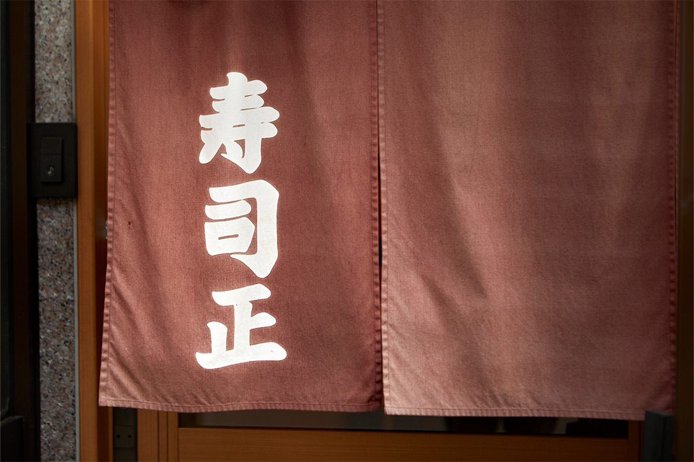
«Эдомаэ Суши Маса»
- Адрес
- префектура Тояма, Тояма, Итибан-тё, 4-29
- Телефон
- +81 76-421-3860
- Часы работы
- понедельник–пятница 11:30–13:30 и 17:00–23:00; суббота, воскресенье и праздники 17:00–23:00
- Выходные
- вторник (в новогодние праздники и Обон открыто)
- Сайт
- sushimasa.asia
Уодзу
«Тасукэ-дзуси»: только местная рыба
Уодзу это портовый город на восточном берегу залива Тояма. Ресторан «Тасукэ-дзуси» открылся здесь в 1978 году, а в 2015 году его унаследовал сын основателя. До этого он долго учился японской кухне, поэтому кроме нигири в меню много отдельных блюд: рыба на гриле, тушёная, приготовленная на пару.
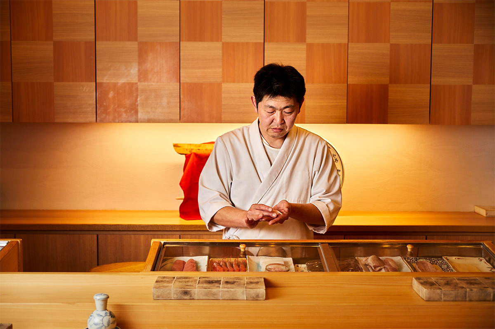
«Я учился не только суши, но и закускам к сакэ. Подумал, что гостям будет приятнее, если я смогу предложить и их»
хозяин ресторана
Хозяин следит не только за вкусом, но и за тем, как выглядят суши. Годы работы с тонкой японской кухней приучили его формовать нигири аккуратно и красиво.
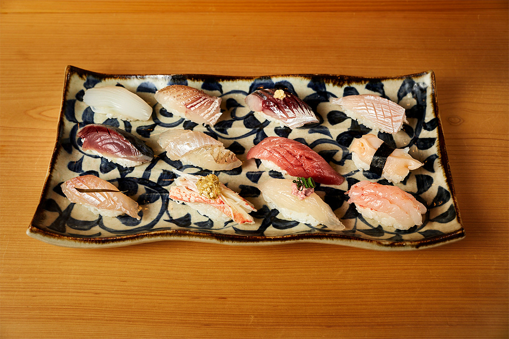
Каждое утро хозяин едет в порт Уодзу, в пяти минутах на машине от ресторана, сам выбирает рыбу, а торгует за него посредник на аукционе.
«Вся наша рыба местная. Отец тоже брал только местную. В заливе много видов, и улов каждое утро другой. Если сегодня привезли много ставриды, это не значит, что завтра будет хорошая ставрида»
хозяин ресторана
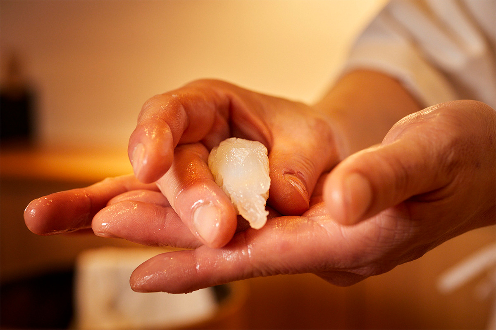
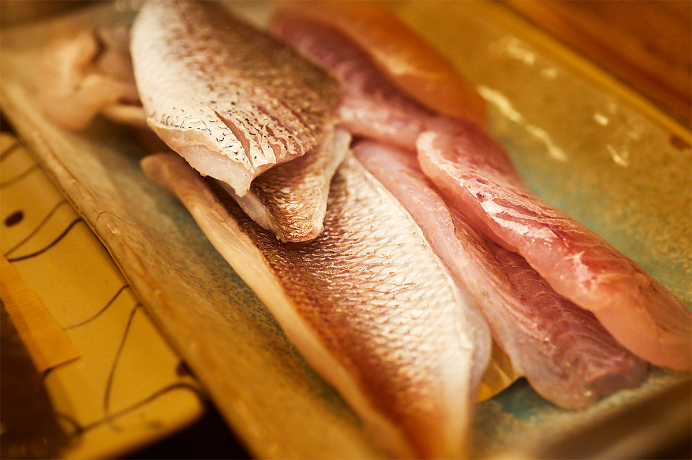
Купленную рыбу обрабатывают сразу, пока она свежая. Обработка здесь минимальная: немного комбу, немного соли.
«Здесь можно достать свежую рыбу, поэтому много делать с ней не нужно. Я не люблю наряжать рыбу. Тогда чувствуется её прямой вкус»
хозяин ресторана
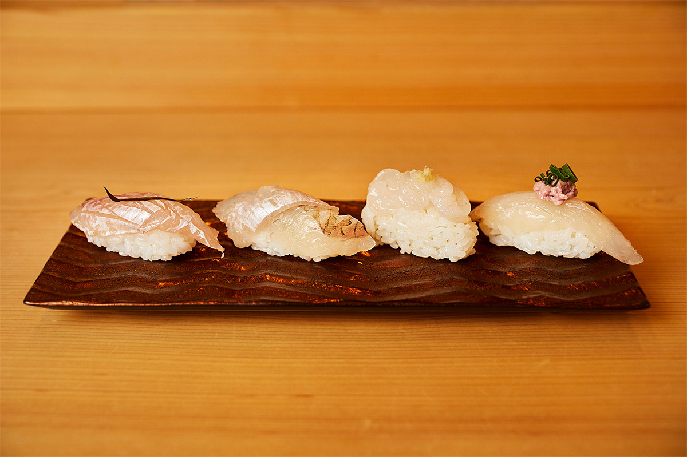
Рис и уксусную заправку здесь не меняли со времён основателя. Рис берут местного сорта «Тэнтакаку», заправку делают из рисового уксуса, соли и сахара, и рис мягко рассыпается во рту.
«Больше всего радует, когда гость говорит: было вкусно, приду ещё. Ради этого и работаешь суши-мастером»
хозяин ресторана
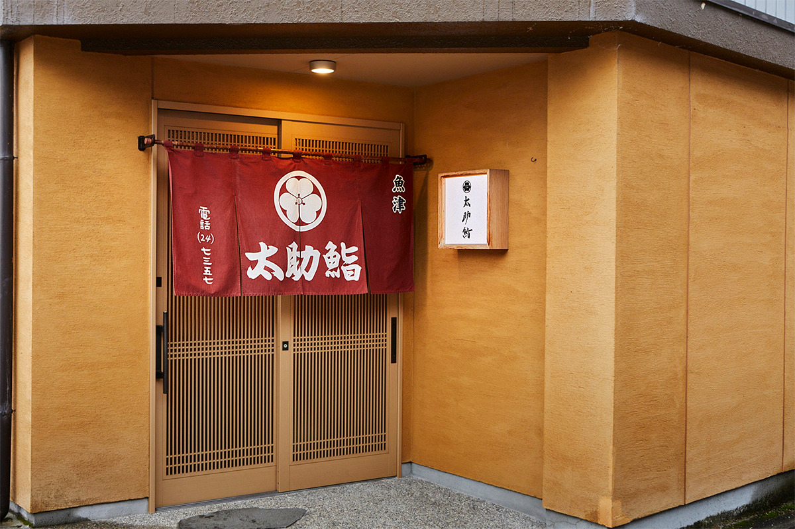
«Тасукэ-дзуси»
- Адрес
- префектура Тояма, Уодзу, Экимаэ-Симмати, 10-14
- Телефон
- +81 765-24-7357
- Часы работы
- 17:00–23:00 (последний заказ 22:30)
- Выходные
- нерегулярно
Хими
«Наруки»: суши, которые можно попробовать только здесь
В июле 2022 года в портовом городе Хими открылся ресторан «Наруки». Шеф родился и вырос в этом городе, а идея открыть здесь суши-ресторан появилась у него за десять лет до этого. После школы он работал в музыкальной индустрии и в 25 лет уехал в Великобританию, чтобы продолжить там. Помешали язык и визы, и он устроился в японский ресторан.
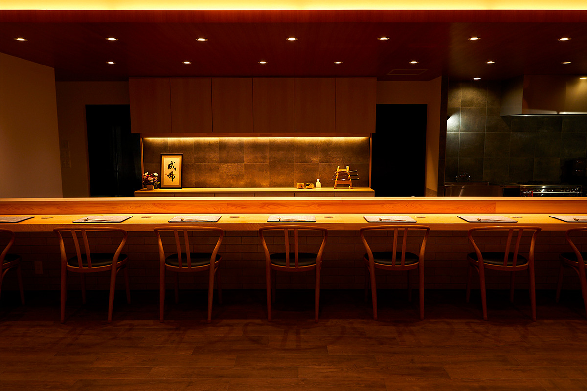
«Я взялся за эту работу поневоле, но я привык во всё вникать и быстро увлёкся. Через шесть лет вернулся домой и поразился продуктам и природе Хими, которых в детстве не замечал»
шеф ресторана
Суши он уже делал в Великобритании, но для своего ресторана хотел настоящей школы и поработал в старом суши-ресторане и в популярном суши-баре Токио.
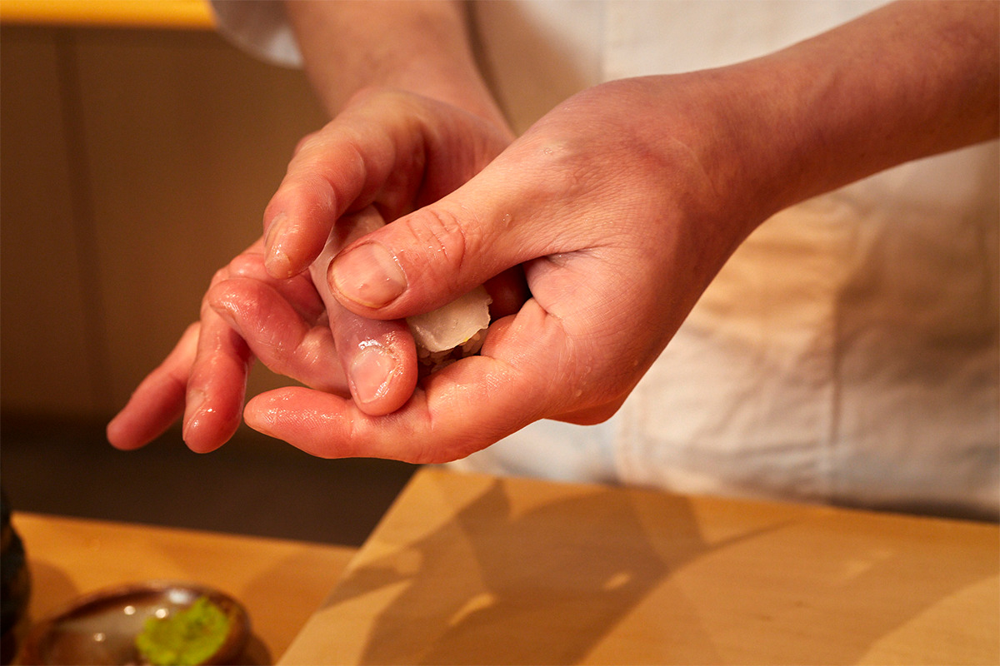
«Я хотел подавать суши, которые можно попробовать только здесь. Беру рыбу из Хими, обрабатываю и приправляю её так, как умею только я, и раскрываю характер каждой рыбы. Чтобы гости почувствовали сезонные продукты Хими, всё выстраиваю очень тщательно»
шеф ресторана
Рыбу шеф покупает у торговца, которому доверяет. Он выбирает живую рыбу или рыбу, которую обескровили и обездвижили прямо на судне, поэтому до ресторана она доезжает без потери свежести.
«Здесь рыбу можно обработать, пока она совсем свежая, и это большое преимущество. У такой рыбы во вкусе и запахе нет ничего лишнего, остаётся чистое послевкусие»
шеф ресторана
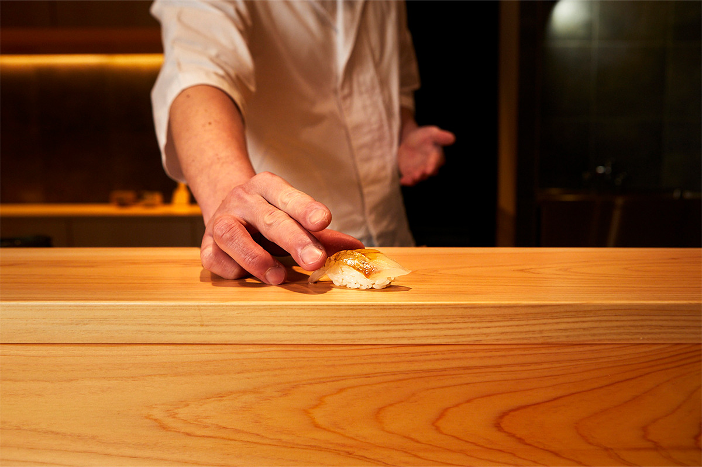
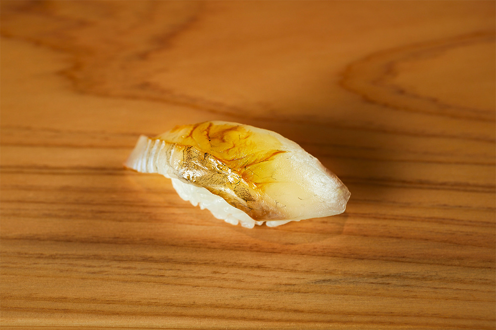
Рис здесь тоже продуман. Шеф берёт два вида рисового уксуса и, чтобы подчеркнуть кислоту, смешивает «Косихикари», выращенный в горах вокруг Хими, с сортом «Сасасигурэ» с полуострова Ното в соседней префектуре Исикава. Температура риса зависит от рыбы: под нежную рыбу его формуют температуры тела, под бури или тунца чуть теплее.
«Говорят, в суши главное, чтобы рыба и рис стали во рту одним целым. Я думаю о вкусе в объёме: сначала мгновенный удар аромата, потом вкус медленно раскрывается, а в конце остаётся сладость риса»
шеф ресторана
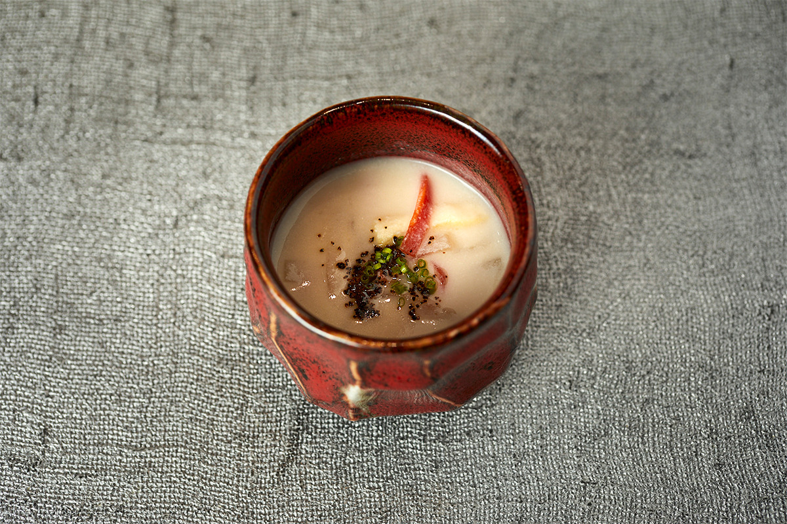
Здесь подают только курс омакасэ (от 15 000 иен в 2023 году). В первой половине идут блюда кухни каппо, во второй нигири, и всё выстроено так, чтобы оставить «послевкусие Наруки». Ради вкуса шеф готов на всё и нередко пробует новые блюда до рассвета.
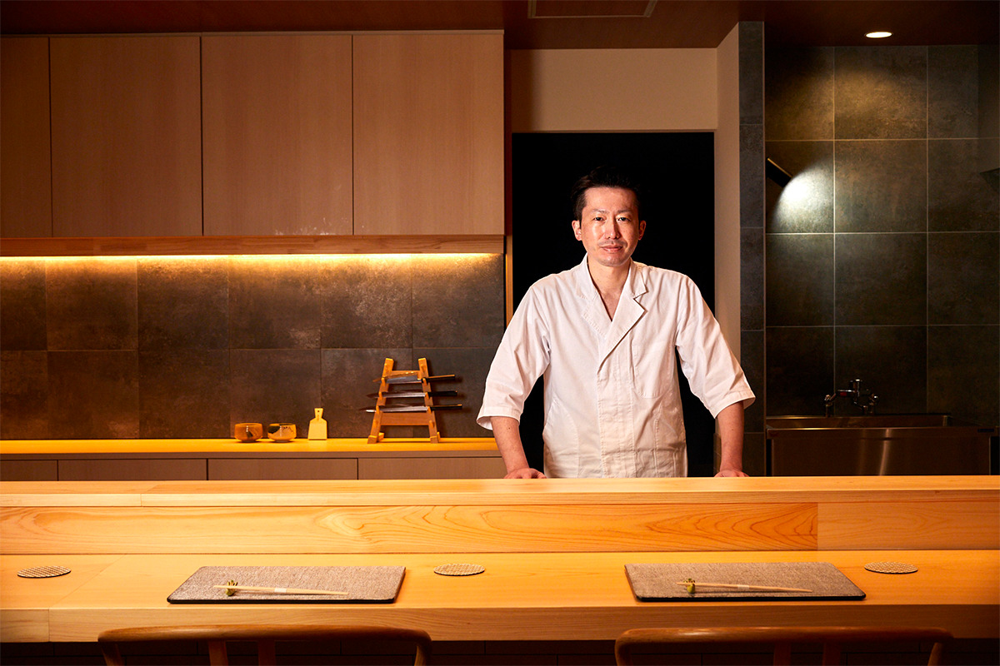
«Если от этого станет вкуснее, я сделаю всё, что смогу. Важно день за днём делать маленькие шаги»
шеф ресторана
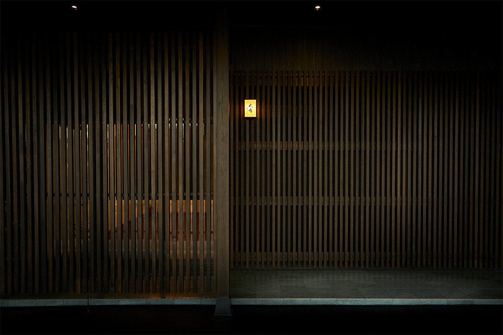
«Наруки»
- Адрес
- префектура Тояма, Хими, Сайвай-тё, 32-31
- Телефон
- +81 766-74-5151
- Часы работы
- 18:00–22:00
- Выходные
- среда
- Цены / Вход
- курс омакасэ от 15 000 иен (2023)
- Сайт
- naruki-himi.com
Такаока
«Вакана»: курс, в котором есть место удивлению
«Вакана» стоит в городе Такаока. Хозяин родился в семье владельцев ресторана и учился суши в соседней префектуре Исикава, когда основатель заболел. Хозяину было чуть больше двадцати, и ему пришлось взять ресторан на себя.
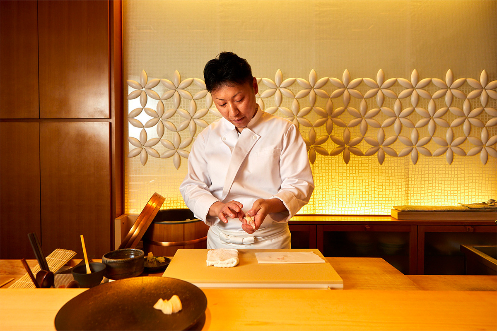
«Поэтому я тем более налегал на учёбу. Я веду ресторан уже 15 или 16 лет, но всё ещё учусь. Пробую, ошибаюсь и ищу свои суши»
хозяин ресторана
Хозяин скромничает, но у «Ваканы» много поклонников. Здесь подают только курс омакасэ (от 11 000 иен в 2023 году) из продуманных блюд и нигири. По всему курсу рассыпаны авторские находки хозяина, и кроме вкуса гостей ждут игра и удивление.
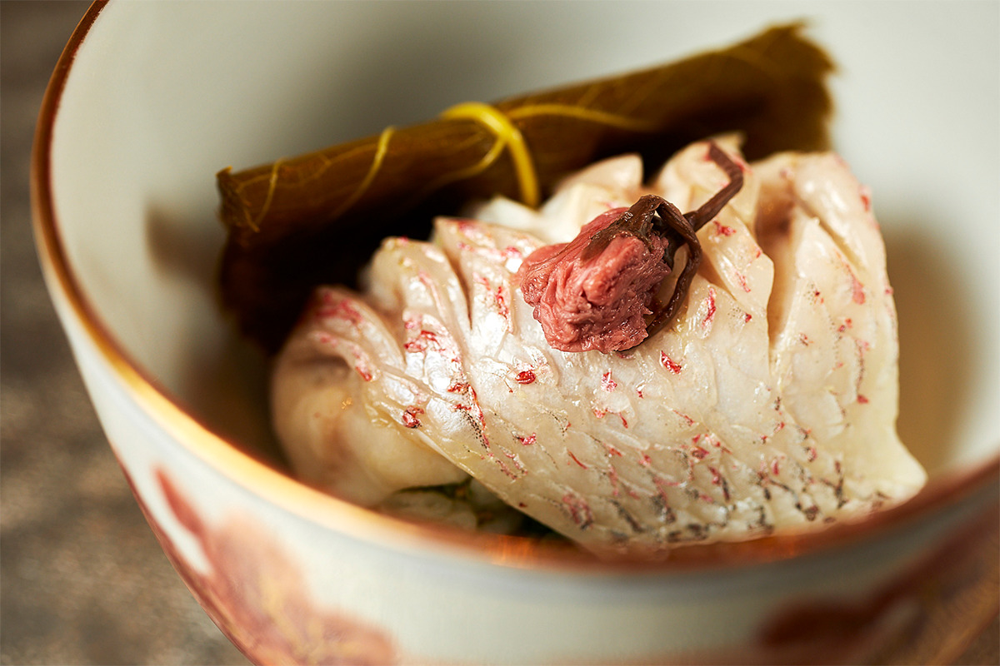
Хозяин стремится к нигири, в которых рыба и рис в равновесии. Сахар в заправку он не добавляет, а сладость регулирует смесью сортов риса. Уксусов четыре, два красных и два белых. Зимой, когда много рыбы с ярким вкусом, рис делают слаще, а весной и летом, когда рыба нежнее, легче. Нигири формуют при 40–45 градусах, чтобы во рту рис был около 38 градусов. Рис мягко рассыпается, каждое зёрнышко чувствуется отдельно.
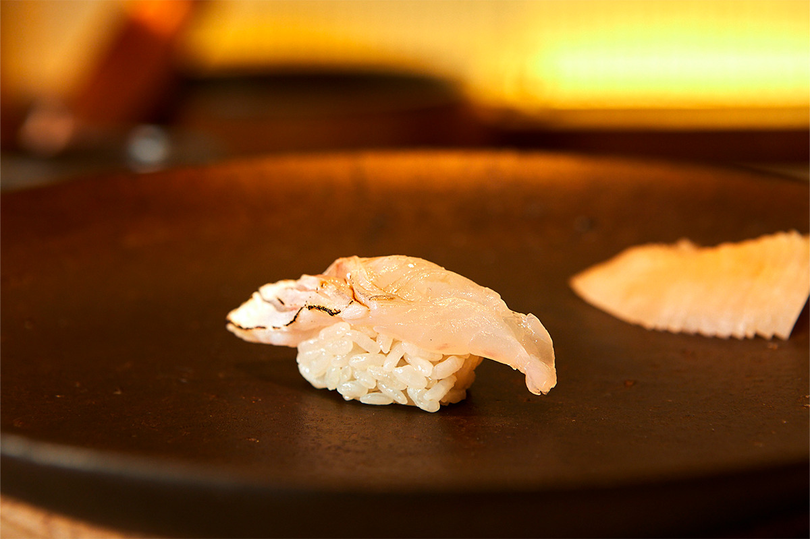
Рыбу хозяин закупает в нескольких портах Тоямы и соседней Исикавы, чтобы в ресторане всегда была рыба, которой он доволен. Купленную рыбу быстро обрабатывают и держат при нужной температуре.
«Мы не выдерживаем рыбу между листами комбу, а только кладём комбу сверху на два-три часа. Поэтому берём комбу Раусу: он отдаёт вкус сильнее всех. Так мякоть становится плотной ровно настолько, насколько нужно»
хозяин ресторана
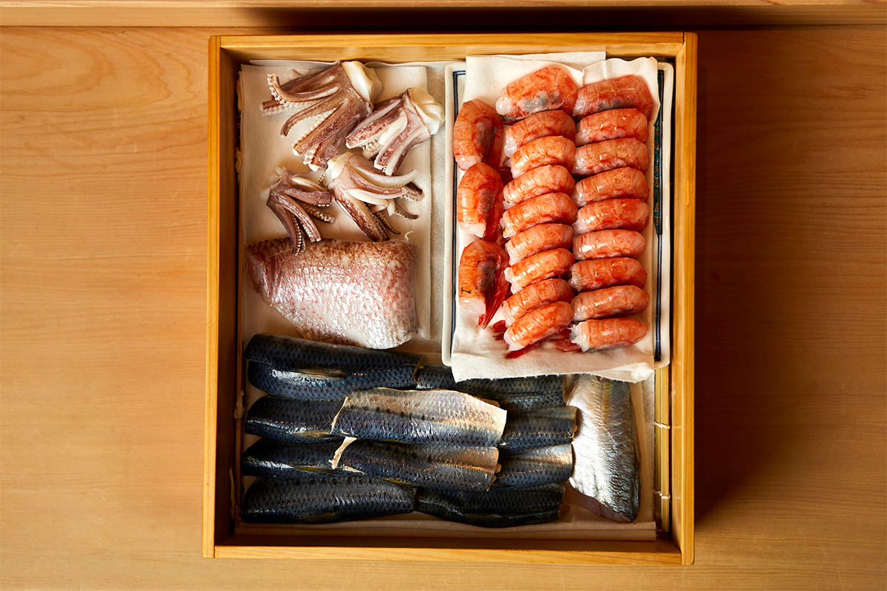
В ресторане никто не торопится. На первом этаже стойка, на втором зал с татами. За суши и сакэ гости разговаривают с хозяином через стойку.
«Хочу, чтобы гости каждый раз находили у нас что-то новое. Над этим работаю каждый день»
хозяин ресторана
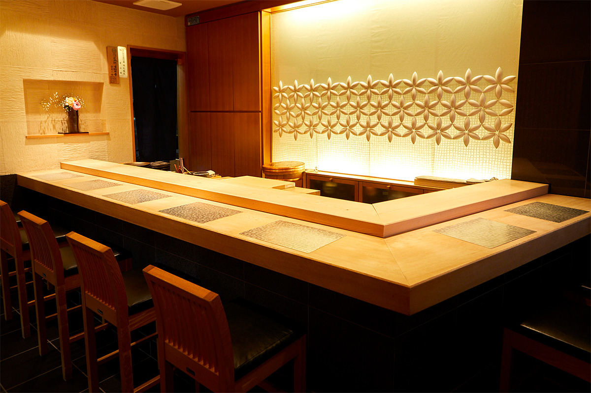
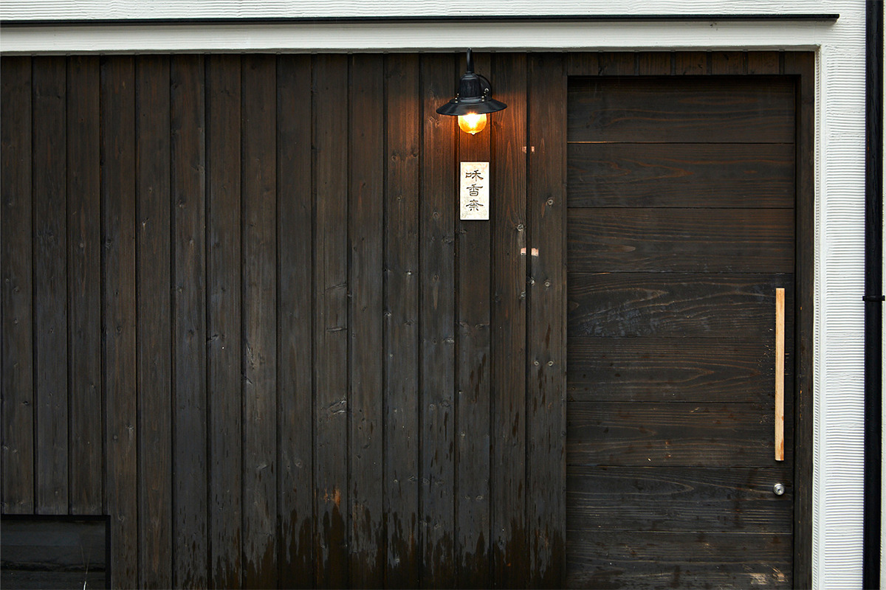
«Вакана»
- Адрес
- префектура Тояма, Такаока, Суэхиро-мати, 37
- Телефон
- +81 766-22-3542
- Часы работы
- 18:00–23:00
- Выходные
- нерегулярно
- Цены / Вход
- курс омакасэ от 11 000 иен (2023)
Фото: Кэндзи Окадзаки.